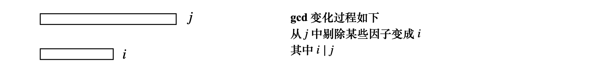

一些树形 dp 问题
树上背包
给一个 n⩽2000 的有根树，根节点为 1，每个点有权值 ai，下面询问
在 u 的子树中选择一个大小恰好为 m，并且包含 u 点的连通块，求最大权值和
这类问题考虑子树合并
记 dp(u,i) 表示以 u 为根的子树，包括 u，选择大小为 i 的连通块，构成的最大权值和
首先 dp(u,1)=au，考虑 u 的每个儿子 ∀ v∈son(u)，尝试合并到父节点上
具体来说，假设当前合并的儿子是 v，要把它合并到父节点 u 中，我们需要依次枚举 u,v 子树中分别选 i,j 个点
i∈sz(u), j∈sz(v)，令 tmp(i+j)=max(dp(u,i)+dp(v,j))
那么 tmp(i+j) 就表示合并子树 v→u，连通块有 (i+j) 个点，不包含 u，构成的最大权值
然后令 dp(u,i+j)←tmp(i+j)
子树全部合并完之后，此时 dp(u,⋯) 是不包括 u 这个点的权值的，那么很好办
将 dp(u) 数组向右平移并且加上 au 即可，dp(u,i)←dp(u,i−1)+au
树上背包2
给一个 n 个点的有根树，每个点给个重量 wi 和 vi，求一个重量和恰好为 m 的包括根的连通块
求最大权值
换句话说，如果一个点 u 被选进来，从 u→root 路径上的点也都要被选进去
如果像之前那样设计状态，dp(i,j) 表示在 i 子树中选择重量恰好为 j 的连通块最大权值
那么可能出现的一种情况是，假设只有 1 个点，它的重量为 10000，那么虽然只有 1 个点，状态数却有 dp(1,10000)
状态数可能是 O(nm) 级别的，无法保证时间复杂度
树上问题很多时候我们考虑一个点选还是不选，从这一个角度出发
注意到如果一个点不会被选，那么这个点对应的所有子树也都不会被选进去，所以考虑树的 dfs 序列
对于某个节点 u，在 dfs 序中，下标范围 [l(u)⋯r(u)] 表示 u 的子树
用 ne(u) 表示 dfs 序中跳过 u 子树的下一个位置，也就是 r(u)+1
如果下一个位置为空，记 ne(u)=n+1
这里的状态设计，是在 dfs 序中从 n→1 倒着做，dp(i,j) 表示 dfs 序中 [i,n] 这一段的节点
选择重量和不超过 j 的最大权值和，同时这些选择的点必须满足，如果一个点选上了，它的祖先也要全部选上
考虑边界 dp(n+1,0)=0，其余的 dp(n+1,⋯)=−∞，这个边界表示 1 个点都没有选
一个点还是可以选或者不选，如果不选，整个子树跳过，否则状态会从子树转移过来
dp(i,j)=max(dp(ne(i),j),dp(i+1,j−wi)+vi)
codeforces
Codeforces Round #774 (Div. 2)
C. Factorials and Powers of Two
题目大意，如果一个数 x 是合法的，当且仅当 x 能写成 x=2d 或者 x=d!，其中 d 是非负整数
那么给你一个 n，你要找到最小的 k，使得 n 等于 k 个合法的数的和
先简单分析一下，1,2 都是合法的，并且 n={1,2} 的话，答案 k=1
对于其他的 n，不难想到，如果能写成合法数的和，那么它一定能提一个 2 这个公共因子，所以 n 必须为偶数
n 可以写成两部分的和，2d1+2d2+⋯+2dk 和 ∑k(k!)
第一部分很自然想到 n 的二进制表示中，⟨d1,d2,⋯,dk⟩ 这些位都要是 1
阶乘部分呢？可以枚举满足 k!⩽n 的 k，假设有 s 个数，满足 i=1∑s(ki)!⩽n
然后进行状态压缩，用一个 s 位的二进制数 sta 表示，形如 (ki)! 的数选还是没选，枚举 [0,2s) 每个状态
那么 sta 中 1 的个数表示选了几个合法的可以表示成阶乘的数，这些数的和记为 sum
如果 n⩾sum，说明还需要选一些形如 2d 的数，这些形如 2d 的数的和是 (n−sum)
那么只要看 (n−sum) 在二进制下有多少位为 1，记为 c=ones(n−sum)
取 min(c+ones(sta)) 就是答案
D. Weight the Tree
题目大意，节点个数为 n 的无根树，一个节点是好节点，当且仅当这个点的权值 wi 等于所有和它相邻的点的权值和
wi=∑jwj，其中 j 为 i 的相邻节点
一开始所有节点的权值 wi 都是未知的，你要做的是为每一个节点分配一个权值 wi，使得好节点的个数最大，如果有多个最优解
要求取权值和最小的那一个
先从简单的开始分析
假设树只有 2 层，即 1 个根节点 u 和 k 个儿子 ⟨v1,v2,⋯,vk⟩
此时最优解，一定要舍弃 u，u 不是好节点，剩下的节点权值都和 wu 相等
即 w(u)=w(v1)=w(v2)=⋯=w(vk)=1
这样来看，最优解的方案是，不是好节点的权值都放 1，好节点的权值为其邻居的个数
我们需要求出最多有多少个好节点
考虑最优解中选择了哪些点作为好节点，对于节点 u，如果选择了 u 作为好节点，那么 u 的子节点都不是好节点
如果 u 不选，状态可以从子节点转移过来
这是比较典型的树形 dp，用 dp(u,0),dp(u,1) 分别表示 u 这个点，不选为好节点或者选的时候
u 及其子树中最多有多少个好节点
具体转移如下，dfs(u)
dp(u,0)=0,dp(u,1)=1，然后遍历子节点 dfs(v)
{dp(u,1)+=dp(v,0)dp(u,0)+=max(dp(v,1),dp(v,0))
因为题目中还需要输出权值和，所以 dp 数组存储一个二元组 (c,w)
c 表示最多的好节点的个数，w 表示权值
此外还需要输出方案，所以我们要记录每一个节点的状态，以及它从哪里转移过来的，要记录一下 (u,sta)
再做一次 dfs，如果当前状态是 (u,1)，那么将 w(u)=g[u].size，并且递归到 (v,0)
否则 w(u)=1 并看看 dp(v,0),dp(v,1) 哪个大，就递归到哪个状态
Codeforces Round #775
C. Weird Sum
题目大意，给你一个 n×m 的矩阵，如果矩阵中两个元素相同，那么就将其曼哈顿距离加入到 sum 中
sum 初始为 0
由于是曼哈顿距离，行和列可以单独处理
首先遍历每一个点，并且用一个数组 r(v) 记录 v 这个值出现的所有行的位置，c(v) 记录这个值出现的所有列的位置
以行 r(v) 计算为例，先对 r(v) 排序
假设目前已经计算好了 [1,k] 这 k 个点的答案，考虑放入第 k+1 个点，对答案 ans 的贡献
假设第 k+1 个点在位置 xk+1，那么 ans+=cost(k+1)，cost(k+1) 表示放入第 k+1 个点的贡献
下面考虑如何计算 cost(k+1)，记 d=∣xk+1−xk∣
加入第 k+1 个点，其贡献可以基于第 k 个点的情况来计算，比如求 (xj,xk+1) 点对的距离
我们之前遍历求出过 (xj,xk) 的距离，在此基础上，(xj,xk+1) 的距离为 (xj,xk)+d
cost(k+1)=j=1∑k((xk−xj)+d)=(xk+d)∗k−j=1∑kxj\
其中 ∑j=1kxj 用一个前缀和 sum 维护，xk+d=xk+1，综上所述
cost(k+1)=xk+1⋅k−sum
列也是同样计算，把答案都加起来就可以了
D. Integral Array
题目大意，给定一个可重集 S，如果满足 ∀x,y∈S,x⩾y，都有 ⌊yx⌋∈S
那么可重集是封闭的，现在需要判断可重集是否封闭
满足所有元素大小 1⩽si⩽c， c⩽106
算法设计
首先 ⌊yx⌋=k,1⩽k⩽106
k 的范围并不是很大，可以考虑枚举 k
对每一个 k，我们有 ky⩽x⩽(y+1)k−1，那么如何确定 y
先看看暴力枚举怎么样？对于 y，枚举 k⋅y⩽c，也就是说只需要枚举 kc 个数
这样看来时间复杂度是 i=1∑nin=ni=1∑nn1=O(nlnn)
完全没有问题，接下来只要知道存不存在 x∈[ky,(y+1)k−1] 的数就可以了
只需要预处理数组，标记一下每一个数是否出现，出现的话 cnt 就 +1，然后用前缀和维护，保证区间的和 =0 就可以了
另外需要注意的是，要保证 [ky,(y+1)k−1] 被区间 [1,c] 所包含，取一个交集
Codeforces Round #757 (Div. 2)
Divan and bitwise operations
题目大意，对于 n 个非负整数构成的序列，a1,a2,⋯,an，定义一个 conziness 如下
选出这个序列 a 的所有非空子序列，计算出所有子序列的异或 xor 值，然后把这些异或值加起来，就是 conziness 值
假设非空子序列的大小为 sz，那么我们需要 ⟨a1,a2,⋯an⟩ 中所有大小为 sz 的子序列
对于每一个大小为 sz 的子序列，我们取 S(sz)=(a(p1)⊕a(p2)⊕a(psz))
然后呢？coziness 值等于 sz=1∑nS(sz)
现在问题是，弄丢了 coziness 值，但是给你 m 个子序列，保证 a 的任意子序列都在 m 个子序列中出现至少一次
当然给出的并不是 m 个子序列的具体值，而是子序列 (假设是 ⟨a1,a2,⋯,asz⟩) 中 ai 的 or 值
现在问原来串对应的 coziness 值是多少，当然 coziness 不止一种，输出任意一种即可
算法分析
首先，不难想到将 m 个数 ⟨x1,x2,⋯,xm⟩ or 起来，就等于 S=(a1∣a2∣⋯∣an)
下面难点在于分析 S 和 coziness 有什么关系？对 S，可以一位一位地来看
coziness 要求所有非空子序列都要求一个 xor 和，并且加起来，我们尝试构造 coziness
如果 S 的某一位，假设第 d 位为 1，那么 n 个数的第 d 位情况如下
⎝⎜⎜⎜⎜⎛a1a2⋮an⎠⎟⎟⎟⎟⎞
因为 coziness 是求 sz 从 1→n 所有子序列的异或值，然后再把异或值加起来
也就是说，我们可以构造 coziness，让 ⟨a1,⋯,an⟩ 第 d 位都是 1
然后当 sz 大小为奇数的时候，这一位异或起来还是 1，对 coziness 有 (szn) 的贡献
因为可以任意取 (szn) 的子序列嘛，这个位的 1 被计算了 (szn) 次
那么 d 这一位贡献是 sz=1∑n[sz是奇数]⋅(szn)=(1n)+(3n)+⋯+(2k−1n)=2n−1
这个很好证明的，(1−1)n 的二项展开，即可证明二项式奇数项和偶数项的和相等，和是 2n/2=2n−1
最后，因为 coziness 是求和，所以实际上 d 这一位对应的值是 2d⋅2n−1
那么综上所数，每一位都考虑过去，仅考虑 S 中为 1 的位 ⟨d1,d2,⋯,dk⟩
(2d1+2d2+⋯,2dk)⋅2n−1=S⋅2n−1
D1. Divan and Kostomuksha
定义一个序列 a，其权值为 i=1∑ngcd(a1,a2,⋯,ai)，现在可以重排 a
求 gcd 的最大值
注意到 ai⩽5⋅106，并不是很大，思考的方向是 ai 的因子
gcd(a1)→gcd(a1,a2)→⋯→gcd(a1,a2,⋯,an) 的过程，gcd 大致变化如图所示

用 dp(i) 表示含有因子 i 的前缀 gcd 和的最大值，从大到小枚举每一个因子，考虑转移
dp(j)→dp(i),i∣j，可以写出转移方程如下
dp(i)=i∣jmaxdp(j)+cost(i)，其中 cost(i) 表示加入 i 这个因子的代价
下面来看 cost(i) 怎么计算
可以先预处理原数组，对于原数组每一个数 x，枚举 x 的所有因子 i，记一下 i 出现次数，cnt(i)+=1
这样对于 i∣j，那么只要 j 出现了，i 这个因子也一定会出现，这部分在 dp(j) 的时候已经统计了
考虑 dp(i)， 在答案中加入 i 这个因子，贡献增加了多少？
那么 i 这个因子作为 gcd 又单独出现了 cnt(i)−cnt(j) 次
所以 cost(i)=(cnt(i)−cnt(j))⋅i
从大到小 dp，先令 dp(i)=i⋅cnt(i)，表示 i 之前不放更长的段 j，前缀 gcd 都是 i
否则的话，i 可以由更长的段 j 转移过来，j 剔除某些因子就得到了 i，如上图所示
dp(i)=i∣jmax(dp(i), dp(j)+i⋅(cnt(i)−cnt(j)))
算法实现上，j 也可以枚举，只需要打表所有的因子，然后枚举出现过的因子 fac(k)
j=i∗fac(k)，用两重循环判断即可
另外注意，打表因子的时候，对于每个数 x，其重复的因子只需要记一次
因为我们打表的是因子而不是素因子，比如 x=4，我们 cnt(2)=1 而不是 2
之后我们在 cnt(4) 的时候再记录 cnt(4)=1，这样所有因子都可以不重不漏记下来
最后的答案是考虑所有因子，如果 cnt(i)=n，也就是说这个因子在所有数中都出现的话
那么 dp(i) 就是边界了，用 dp(i) 去更新答案
总结，这个类型的 dp 大致就是这样，枚举每一个因子 i，有下面两类决策转移
第一就是我使得前缀 gcd 都等于 i，gcd(a1)=gcd(a1,a2)=⋯gcd(a1,⋯,ak)=i
对应到图上就是 i 之前不放更长的段 j
第二种就是找到 i∣j 的 j，dp(i) 可以由 dp(j) 转移过来，即在 j 的基础上，剔除某些因子
D2. Divan and Kostomuksha (hard version)
和上一道题的区别仅仅是数据范围的不同
考虑如何优化，实际上，上一道题目对 i∣j 时 dp(j)→dp(i) 的转移处理中，有重复计算
我们枚举了所有可能的因子，令 j=i⋅fac(k)，实际上并没有必要
对于某一个素因子 p，我们计算 dp(i)←dp(i⋅p) 转移的时候，是没有必要再考虑 dp(i⋅p2) 的
因为我们从大到小 dp，考虑 dp(j)=dp(i⋅p) 的时候，肯定已经计算了 dp(j⋅p)=dp(i⋅p2) 的转移了
所以我们只需要打表所有的素因子，然后从大到小 dp
对于转移 dp(i)←dp(j),i∣j，我们只考虑枚举所有可能的素因子，j=i⋅prime(k)
dp(j)→dp(i) 的转移，每次只剔除一个素因子
具体来说，从大到小 ∀i∈[N→1]，枚举素因子 p∈primes, j=i∗p
dp(i)=max(i⋅cnt(i), dp(j)+i⋅(cnt(i)−cnt(j)))
这里的素数打表到 max(ai) 即可
 微信
微信 支付宝
支付宝